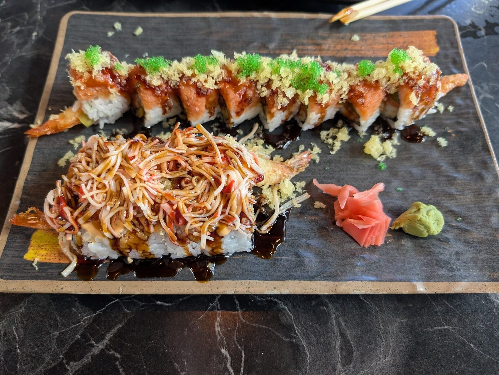

Hibachi grill tables
Teppanyaki steak, shrimp, scallops, noodles and vegetables, cooked on the grill at your table.

Yamato · Zephyrhills
Yamato Japanese Steakhouse & Sushi Bar serves Zephyrhills from Wesley Chapel.
Coming from Zephyrhills? Yamato Japanese Steakhouse & Sushi Bar is in Wesley Chapel, on Paseo Drive. Hibachi grill tables, sushi and happy hour until 6 PM.
What to order
Grill, sushi bar and bento.
Teppanyaki steak, shrimp, scallops, noodles and vegetables, cooked on the grill at your table.
Rolls and nigiri from the sushi bar.

Bento boxes with dumplings, rice and more.

4.42666 Google reviews
Food was excellent. Big portions Friendly service. Affordable price. Place was crazy busy.
We visited today and ordered three teppanyaki dishes, one with seafood and two with steak, shrimp, and chicken. The soup and salad were fresh and delicious. The shrimp, scallops, steak, noodles, and vegetables were all tender and cooked perfectly. The chicken was slightly dry, which is somewhat expected with hibachi-style cooking. The service was professional, polite, and knowledgeable, thank you, Travis!
The food was absolutely delicious, hot, fresh, and clearly prepared with care. But while the meal alone would have earned a glowing review, the true reason I felt compelled to write this was the extraordinary service I received from Julie (or Julia) at the hostess stand.